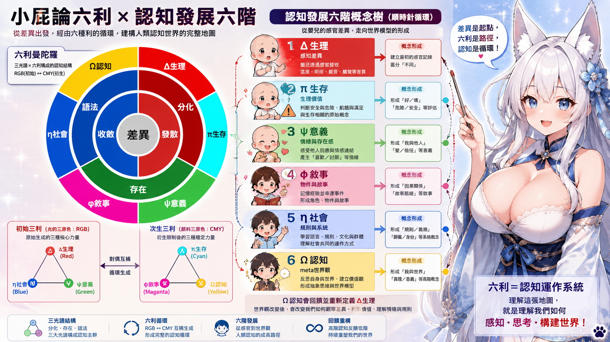

1. 概念不是憑空冒出來
它通常是某個差異先亮起來，反覆出現，最後才被你穩定認成「這是一種東西」。
小屁論 5.3
我們不是先看見世界上有什麼，而是先感到哪裡不一樣。5.3 在講的，就是這些差異怎麼一步一步被穩住、被命名，最後長成概念。
世界最初不是一堆現成物件，而是一連串被感到、被穩住、被補完的差異。
Public Reading
如果 5.0 在問「一個系統怎麼開始像生命」，5.1 在問「它會活成什麼型態」，5.2 在問「它怎麼長出時間與湧現」，那 5.3 問的就是另一個很根的問題：一個已經會感差異、會維持邊界、會形成內時間的系統，怎麼開始長出概念？
這件事可以用一個很直觀的畫面來理解：嬰兒第一次被紅色吸住時，看到的不是字典裡的「紅色」定義，而是一個亮點、一個差異事件。後來類似的亮點越來越多，這些差異被收進同一塊穩定區域，再被語言、文化和故事補完，最後才會變成我們以為很理所當然的概念世界。
語言也是在這個過程裡慢慢長進來的。嬰兒不一定先懂「紅色」這個詞，但他會慢慢注意到：每當某一類現象出現，大人常常會發出同一段聲音。久了之後，他學到的不只是聲音本身，而是這段聲音原來是在穩定指向某一類重複出現的差異。也就是說，語言不是概念的起點，而是概念被共同命名、被社會固定下來之後，開始變成共享工具的那一步。
所以 5.3 不是在證明顏色學，也不是要跟正規認知科學爭位置。它比較像一個小屁論式的工作模型：用差異、六利、三光譜與 12 極性，去讀「概念到底是怎麼被壓出來的」。
如果要把它縮成一句很白話的話，就是：我們怎麼把「哪裡不一樣」慢慢變成「這是什麼」。差異先出現，概念後來才追上；而概念一旦穩住，又會反過來改變我們下一次看世界的方式。
Quick Start
它通常是某個差異先亮起來，反覆出現，最後才被你穩定認成「這是一種東西」。
它比較像一塊穩定區域。紅色積木、紅色蠟筆、紅色蘋果都不一樣，但你會慢慢把它們收進同一個概念框裡。
一旦概念穩了，你下一次再看世界，就不只是看見差異，而是會直接看見類別、故事和意義。
Reading Flow
最前面發生的，其實不是概念，而是差異事件。某個東西比背景更亮、更刺眼、更吸人，所以注意力先被抓走。這時候系統還沒有一個穩定名詞，只是知道「那個東西不一樣」。
接著，這些相似的差異會被慢慢收在一起，變成一塊可以反覆認出的穩定區域。你不一定說得出定義，但已經開始知道哪些經驗彼此很像。
再往前一步，系統會把不同經驗補成同一條線，長出類別感與概念感。這就是為什麼紅色積木、紅色蠟筆、紅色蘋果雖然不同，你還是會知道它們都和「紅色」有關。
這時語言會開始接手。嬰兒慢慢發現，大人對同一類現象會反覆發出同一段聲音；那段聲音久了就不只是聲音，而會變成一個共享標記。概念因此不只存在於個人腦內，也開始進入社會、教學與共同世界。
概念穩定之後，就會開始長出規則：邊界更清楚、分類更穩、用途更明確。再後來，概念會被放進故事、文化、情緒與關係裡，變成能被講述、被交換、被教學的東西。
最後，概念不只幫你理解世界，還會反過來決定你怎麼看世界。這就是所謂的 Meta 概念：你不再只是看見零散差異，而是直接看見一種世界觀、一種解釋框架。
Concept Map

Stage Table
超短記法：你也可以把這六階先想成一條很直覺的路：亮點 -> 區域 -> 類別 -> 規則 -> 故事 -> 世界觀。
Six Stages
Six Virtues
第一個被感到的亮點。概念還沒出現前，差異先打到感官與注意力。
差異被收成穩定區域。系統開始知道哪些經驗可以算在一起。
概念被命名、被共同看見，開始進入共享語言。
不同經驗被補成同一條概念線，系統知道自己在辨識什麼。
概念被放進故事、情境與時間裡，開始可被傳遞、可被教學。
概念進一步變成價值、象徵與世界觀，反過來改變下一次的注意力。
Color Grammar
這不是在說顏色科學本身，而是在借一個很直觀的圖像語法。RGB 可以先讀成「概念剛亮起來時的生成面」，CMY 可以先讀成「概念被補完、被限制、被寫進世界時的衍生面」。
如果再往前收一句：RGB 全疊會接近白，像生成被一路打開；CMY 全疊會接近黑，像限制被一路收滿。 所以這裡的重點不是顏料或螢幕原理本身，而是「打開」和「收束」這兩種概念運動。
Red 像第一個亮點，Green 像被分辨出的差異群，Blue 像開始內化的概念深度。
Cyan 像共享的切面，Magenta 像補完與敘事黏合，Yellow 像文化與世界觀的外顯層。
重點是：概念總有一面在生成，一面在被穩住。這頁只是用色彩把那兩面畫得更好懂。
Small Cases
差異被抓住，然後反覆被認出來。這條路最像「先被吸住，再知道這是一種穩定物件」。
分類感先變強。你不只記得它是紅的，也開始知道「紅色」可以被拿來畫、拿來製造別的東西。
概念進入故事與文化。紅色不只是顏色，還可能連到熟、甜、危險、誘惑、節慶之類的語意場。
Bridge
5.3 把 5.0 的生命條件、5.1 的生命型態、5.2 的內時間，往前接成「概念到底怎麼被長出來」。
如果六利給的是功能位，RT30 給的就是空間位。概念不只會長出來，還會被定位、被切面、被走過。
看 RT30你可以先把這頁讀成：我們怎麼把「哪裡不一樣」慢慢變成「這是什麼」。先這樣就夠了。
Reading Note
這頁在做的是小屁論式的概念生成模型，不是在替認知科學或發展心理學下最終定論。
如果你是第一次來，不需要一開始就記六利或 12 極性。先抓住「差異如何被穩成概念」就夠了。